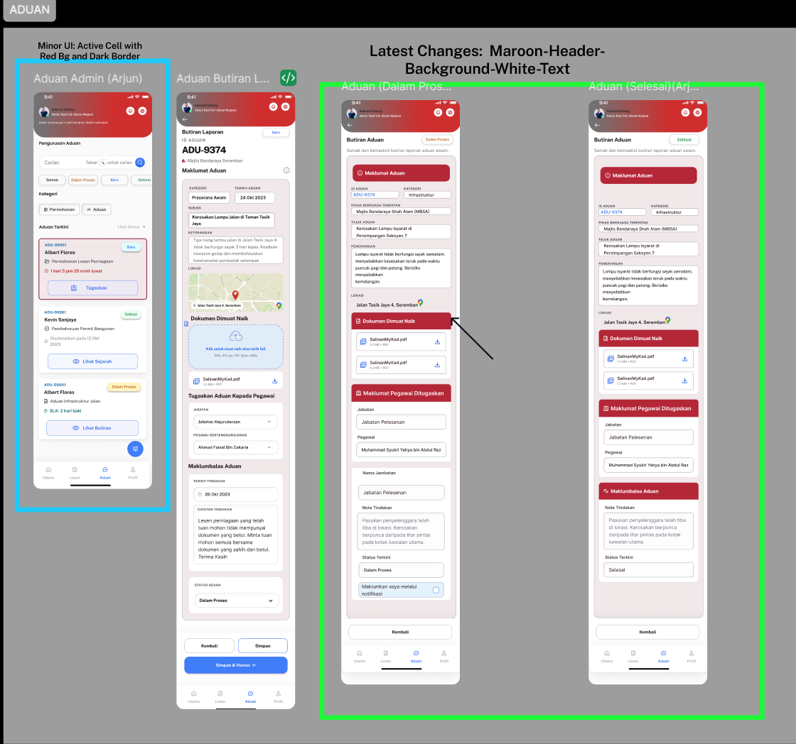
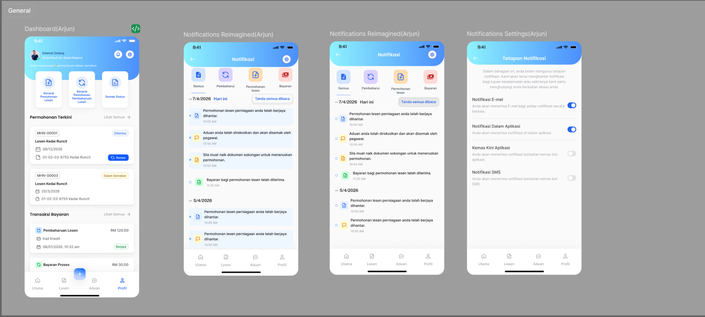

Government business licensing portal with multi-role user flows. Designed 200+ pages including ADUAN complaint system, PEMANTAUAN monitoring, user registration & management modules.

ADUAN & Web Dashboard Interface

Responsive Mobile App Interface
Disclaimer: The UI/UX designs, workflows, and concepts showcased in this gallery were designed and developed during my professional tenure at Century Software. All intellectual property, proprietary rights, and copyrights for the One Stop Centre (OSC) portal belong exclusively to Century Software (M) Sdn Bhd. These materials are presented here strictly for professional portfolio and demonstration purposes.